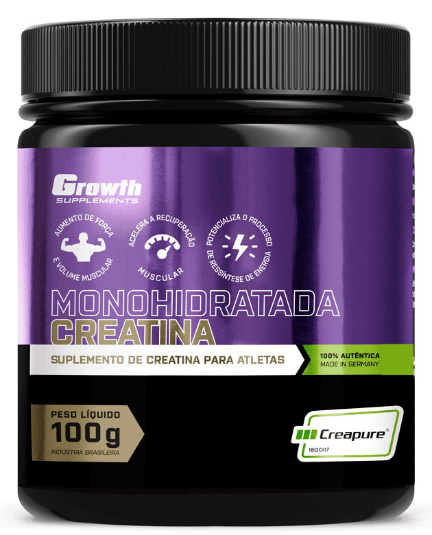

Creatina é um composto de aminiácidos presentes nas fibras musculares e no cérebro. A creatina não é essencial, contudo a suplmentação desse composto pode elevar as concentrações musculares
O melhor momento para ingerir creatina é em qualquer momento do dia de 1 a 2 vezes